Functional Grading Guide#
This guide is a practical reference for defining spatial gradients in OpenVCAD. Gradients are the core mechanism for creating functionally graded designs — parts whose material properties, colors, or compositions change continuously through space.
Prerequisites#
This guide assumes you have completed the Getting Started Guide, in particular:
Lesson 4 (Attributes /
FloatAttribute)Lesson 5 (Colors /
Vec4Attribute)Lesson 6 (Volume Fractions /
VolumeFractionsAttribute)
If you have not worked through those lessons, please do so first. They introduce the attribute system and show how constant and simple gradient expressions are attached to geometry.
For the canonical attribute name strings (MODULUS, DENSITY, COLOR_RGBA, VOLUME_FRACTIONS, etc.) and their *_TYPE helpers, see Default attribute names and types in the Python API.
Setup#
All scripts in this guide use matplotlib and numpy to plot the gradient functions alongside the 3D renders. Install them if you haven’t already:
pip install matplotlib numpy
Running the Examples#
Scripts are located in examples/2_gradients/. Run any script directly:
python 01_linear_gradients.py
Each script will:
Open the interactive OpenVCAD render preview (close the window to continue).
Display a matplotlib plot of the gradient expressions used.
Note: To view an attribute in the render window, select it from Object -> Selected Attribute.
Building Parametric Expressions with Python f-Strings#
All gradient expressions in OpenVCAD are strings that get compiled at runtime. To make your designs parametric, you can use Python f-strings to inject variable values into expression strings:
slope = 0.18
offset = 5.5
expr = f'{slope} * z + {offset}' # becomes: '0.18 * z + 5.5'
A few tips:
Numeric formatting: Use
f'{val:.4f}'to control decimal places when precision matters.Curly braces: The
{variable}syntax is replaced by the variable’s value. Everything outside braces is literal.Mixing variables: You can combine Python parameters with OpenVCAD coordinate variables freely:
f'{amp} * sin({freq} * x)'.
For the full list of available math operators, functions (sin, exp, clamp, etc.), and coordinate variables, see Math expressions in OpenVCAD.
Coordinate Systems at a Glance#
Every expression can use any combination of these spatial variables:
System |
Variables |
Description |
|---|---|---|
Cartesian |
|
Standard axes |
Cylindrical |
|
Distance from Z axis, azimuthal angle, height |
Spherical |
|
Distance from origin, azimuthal angle, polar angle |
Signed Distance |
|
Distance to the object surface (negative = inside, 0 = surface, positive = outside) |
You can mix variables from different systems in a single expression. See Math expressions in OpenVCAD for complete definitions and all available operators.
Lesson 1: Linear Gradients#
The simplest gradient is a linear function of a single spatial variable. The general form is:
f(x) = slope * x + offset
This maps any Cartesian axis to a linearly varying attribute value. A power-law gradient uses the form (normalized_position)^n to create a non-uniform ramp where the exponent n controls how quickly the value grows.
In this example, both gradients are attached to the same rectangular prism along the X axis:
Modulus (linear): maps x in [-20, +20] to [1, 10] MPa
Density (power law with n=3): same range, but the value stays low for most of the span and rises sharply near the end
import os
import pyvcad as pv
import pyvcad_rendering as viz
import matplotlib.pyplot as plt
import numpy as np
length = 40.0
width = 10.0
height = 10.0
half_len = length / 2.0
# Linear: maps x in [-20, +20] to [1, 10]
mod_min = 1.0
mod_max = 10.0
slope = (mod_max - mod_min) / length
offset = (mod_max + mod_min) / 2.0
modulus_expr = f'{slope}*x + {offset}'
# Power law: same range, exponent n=3
n = 3.0
power_law_expr = f'({mod_min} + ({mod_max} - {mod_min}) * ((x + {half_len}) / {length}) ^ {n})'
prism = pv.RectPrism(pv.Vec3(0, 0, 0), pv.Vec3(length, width, height))
prism.set_attribute(pv.DefaultAttributes.MODULUS, pv.FloatAttribute(modulus_expr))
prism.set_attribute(pv.DefaultAttributes.DENSITY, pv.FloatAttribute(power_law_expr))
root = prism
viz.Render(root)
Plot
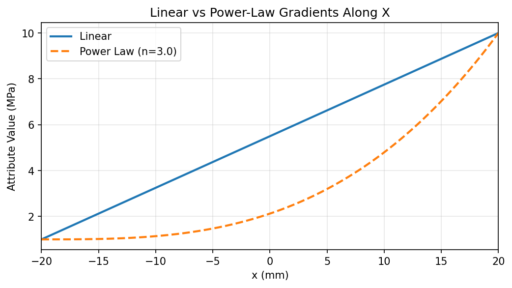
Render (modulus)
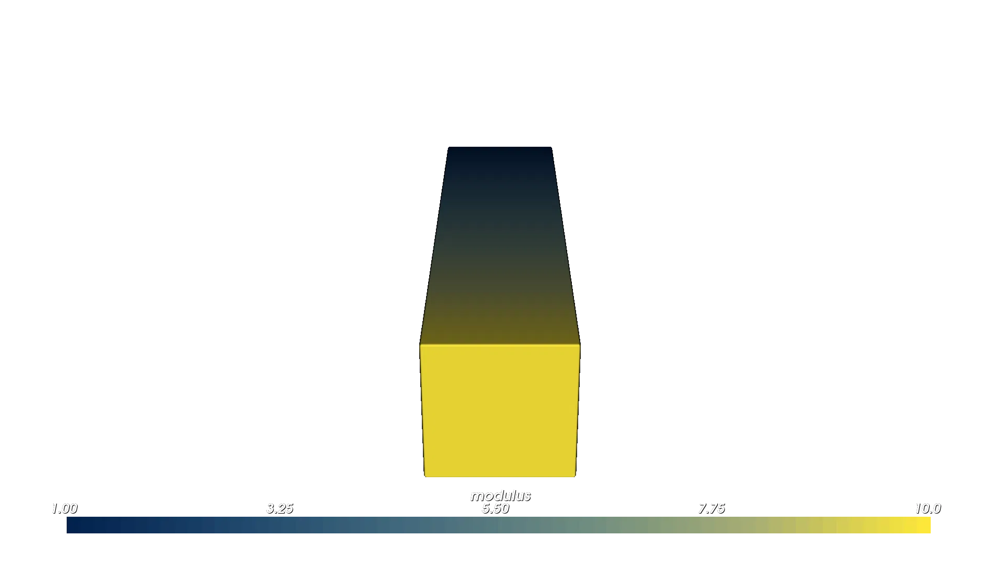
Render (density)
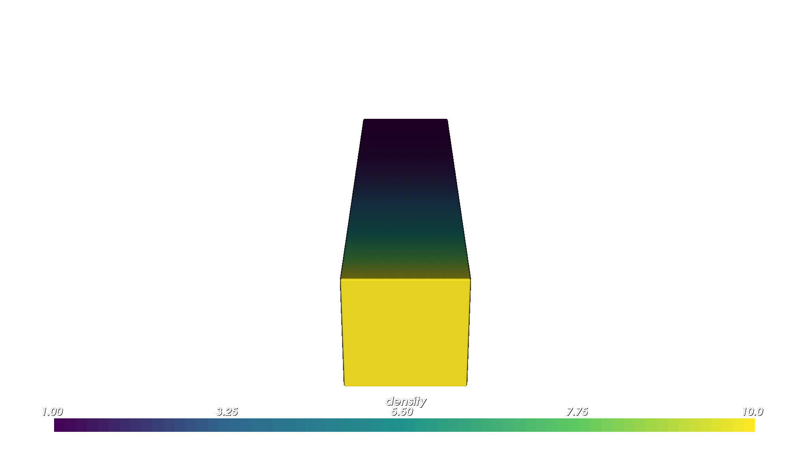
Lesson 2: Non-Linear Gradients#
Non-linear gradients provide smooth transitions, bell-shaped profiles, and exponential falloffs that are common in engineering applications. This example attaches three different non-linear gradients to the same prism:
Gradient |
Expression |
Attribute |
|---|---|---|
Sigmoid |
|
Modulus |
Gaussian |
|
Temperature |
Exponential Decay |
|
Density |
The sigmoid creates a smooth step transition — useful for transitioning between two material regions without a hard boundary. The steepness parameter k controls how sharp the transition is.
The Gaussian creates a bell-curve peak centered at the origin — useful for localized reinforcement or heating profiles.
The exponential decay starts high and drops off — useful for modeling diffusion or attenuation from a surface.
import os
import pyvcad as pv
import pyvcad_rendering as viz
import matplotlib.pyplot as plt
import numpy as np
length = 50.0
half_len = length / 2.0
# Sigmoid: smooth step along X
k = 0.2
sig_min, sig_max = 1.0, 10.0
sigmoid_expr = f'{sig_min} + ({sig_max} - {sig_min}) / (1 + exp(-{k} * x))'
# Gaussian: bell curve centered at origin
amplitude, sigma = 10.0, 10.0
gaussian_expr = f'{amplitude} * exp(-(x^2) / (2 * {sigma}^2))'
# Exponential decay from left edge
decay_rate, exp_amplitude = 0.06, 10.0
exponential_expr = f'{exp_amplitude} * exp(-{decay_rate} * (x + {half_len}))'
prism = pv.RectPrism(pv.Vec3(0, 0, 0), pv.Vec3(length, 10, 10))
prism.set_attribute(pv.DefaultAttributes.MODULUS, pv.FloatAttribute(sigmoid_expr))
prism.set_attribute(pv.DefaultAttributes.TEMPERATURE, pv.FloatAttribute(gaussian_expr))
prism.set_attribute(pv.DefaultAttributes.DENSITY, pv.FloatAttribute(exponential_expr))
root = prism
viz.Render(root)
Plot
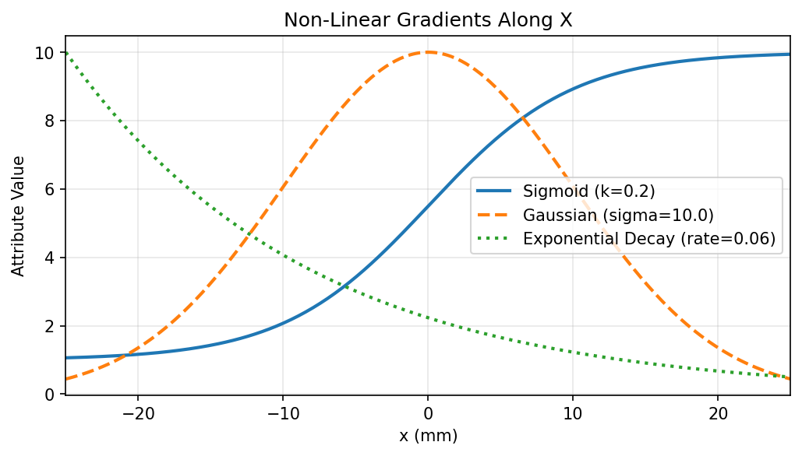
Render (modulus — sigmoid)

Render (temperature — Gaussian)
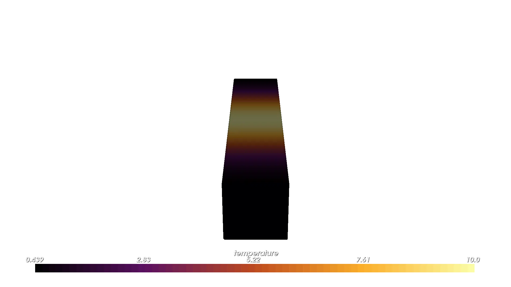
Render (density — exponential)

Lesson 3: Periodic Gradients#
Periodic gradients use trigonometric functions to create oscillating patterns. They are useful for alternating material layers, wave-like stiffness profiles, and decorative color bands.
This example applies two periodic gradients to a rectangular prism:
Sinusoidal modulus: oscillates along X with a base value and amplitude
Color bands: uses phase-shifted sine waves on the red and blue channels to create alternating stripes
import os
import pyvcad as pv
import pyvcad_rendering as viz
import matplotlib.pyplot as plt
import numpy as np
length = 50.0
half_len = length / 2.0
# Sinusoidal modulus
frequency = 0.5
mod_base, mod_amplitude = 5.0, 4.0
sin_expr = f'{mod_base} + {mod_amplitude} * sin({frequency} * x)'
# Color bands using phase-shifted sine
color_freq = 0.8
r_expr = f'0.5 * sin({color_freq} * x) + 0.5'
g_expr = '0.2'
b_expr = f'0.5 * sin({color_freq} * x + 3.14159) + 0.5'
a_expr = '1.0'
prism = pv.RectPrism(pv.Vec3(0, 0, 0), pv.Vec3(length, 10, 10))
prism.set_attribute(pv.DefaultAttributes.MODULUS, pv.FloatAttribute(sin_expr))
color_attr = pv.Vec4Attribute(r_expr, g_expr, b_expr, a_expr)
prism.set_attribute(pv.DefaultAttributes.COLOR_RGBA, color_attr)
root = prism
viz.Render(root)
Plot
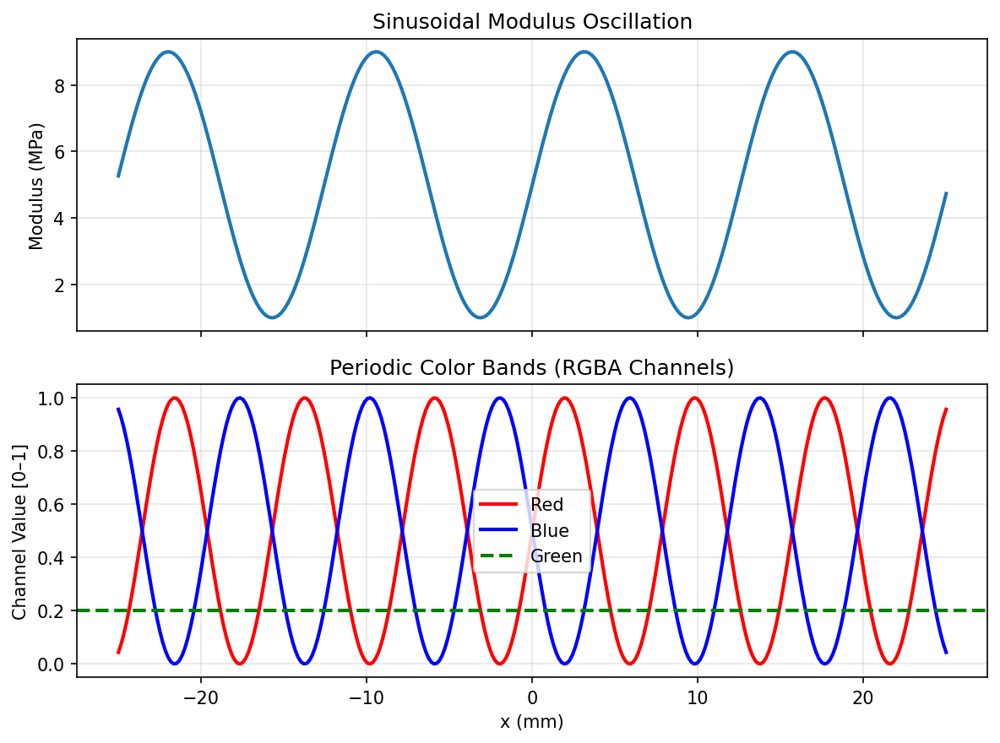
Render (modulus)

Render (color)
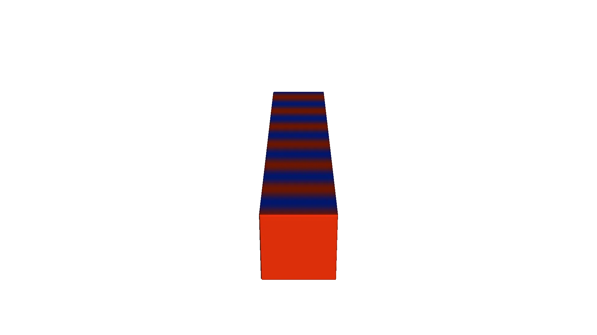
Lesson 4: Multi-Axis Gradients#
Gradients can be functions of two or more spatial variables simultaneously. This creates 2D patterns across the surface of an object.
This example uses a flat square slab and applies:
Diagonal color gradient:
f(x, y) = (x + y)normalized to [0, 1], producing a corner-to-corner color sweepRadial modulus:
sqrt(x^2 + y^2)normalized, producing a bull’s-eye pattern from center to edgesRadial volume fractions: two-material blend that transitions from one material at the center to another at the edges
import os
import pyvcad as pv
import pyvcad_rendering as viz
import numpy as np
side = 40.0
half_side = side / 2.0
max_rho = half_side * np.sqrt(2)
materials = pv.default_materials
# Diagonal color: (x + y) normalized
diag_r = f'clamp((x + y + {side}) / ({2 * side}), 0, 1)'
diag_g = f'1.0 - clamp((x + y + {side}) / ({2 * side}), 0, 1)'
# Radial modulus from center
radial_expr = f'clamp(sqrt(x^2 + y^2) / {max_rho}, 0, 1)'
# Volume fractions: radial blend
vf_a = f'clamp(sqrt(x^2 + y^2) / {half_side}, 0, 1)'
vf_b = f'1.0 - clamp(sqrt(x^2 + y^2) / {half_side}, 0, 1)'
slab = pv.RectPrism(pv.Vec3(0, 0, 0), pv.Vec3(side, side, 10))
slab.set_attribute(pv.DefaultAttributes.COLOR_RGBA,
pv.Vec4Attribute(diag_r, diag_g, '0.3', '1.0'))
slab.set_attribute(pv.DefaultAttributes.MODULUS,
pv.FloatAttribute(radial_expr))
slab.set_attribute(pv.DefaultAttributes.VOLUME_FRACTIONS,
pv.VolumeFractionsAttribute([
(vf_a, materials.id("red")),
(vf_b, materials.id("blue"))
]))
root = slab
viz.Render(root, materials)
Plot (2D heatmaps)
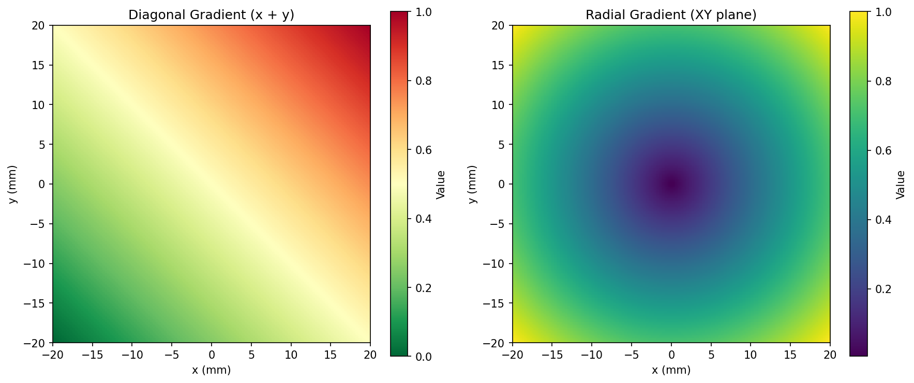
Render (color — diagonal)
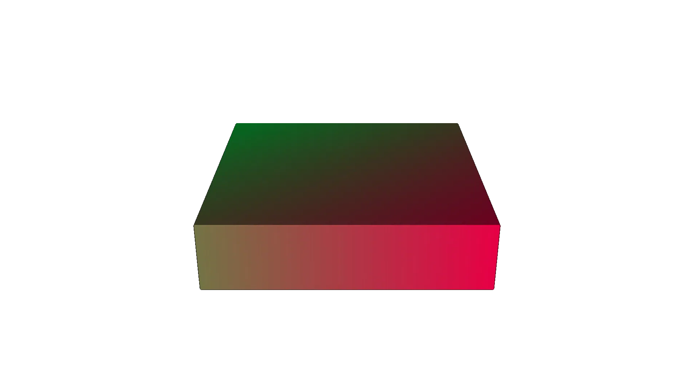
Render (modulus — radial)

Render (volume fractions — radial)
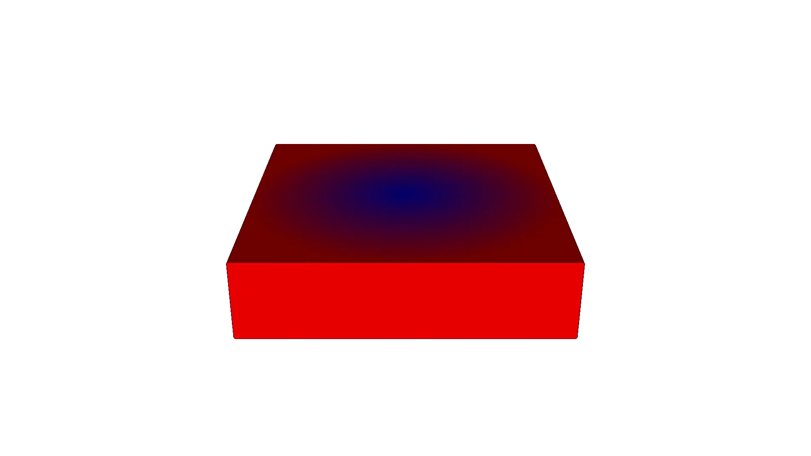
Lesson 5: Signed-Distance Gradients#
The special variable d represents the signed distance to the object’s implicit surface:
d < 0: inside the object
d = 0: on the surface
d > 0: outside the object (not sampled during rendering)
This makes d ideal for creating surface-following gradients — stiff skins, colored shells, or material transitions that conform to the object’s shape regardless of its geometry.
This example applies three d-based gradients to a sphere:
Skin modulus: exponential decay from surface inward — high stiffness at the shell, soft in the core
Shell color: red on the surface transitioning to blue in the interior
Volume fractions: stiff material at the skin, soft material in the core
Note: The renders below show a clipped cross-section to reveal the internal gradient.
import os
import pyvcad as pv
import pyvcad_rendering as viz
radius = 15.0
materials = pv.default_materials
# Skin modulus: high at surface, decays inward
skin_thickness = 3.0
skin_min, skin_max = 1.0, 10.0
skin_expr = f'{skin_min} + ({skin_max} - {skin_min}) * exp(d / {skin_thickness})'
# Shell color: red at surface, blue in core
shell_t = 2.0
shell_r = f'clamp(1.0 + d / {shell_t}, 0, 1)'
shell_b = f'clamp(-d / {shell_t}, 0, 1)'
# Volume fractions: skin vs core
vf_skin = f'clamp(1.0 + d / {skin_thickness}, 0, 1)'
vf_core = f'1.0 - clamp(1.0 + d / {skin_thickness}, 0, 1)'
sphere = pv.Sphere(pv.Vec3(0, 0, 0), radius)
sphere.set_attribute(pv.DefaultAttributes.MODULUS,
pv.FloatAttribute(skin_expr))
sphere.set_attribute(pv.DefaultAttributes.COLOR_RGBA,
pv.Vec4Attribute(shell_r, '0.1', shell_b, '1.0'))
sphere.set_attribute(pv.DefaultAttributes.VOLUME_FRACTIONS,
pv.VolumeFractionsAttribute([
(vf_skin, materials.id("red")),
(vf_core, materials.id("blue"))
]))
root = sphere
viz.Render(root, materials)
Plot
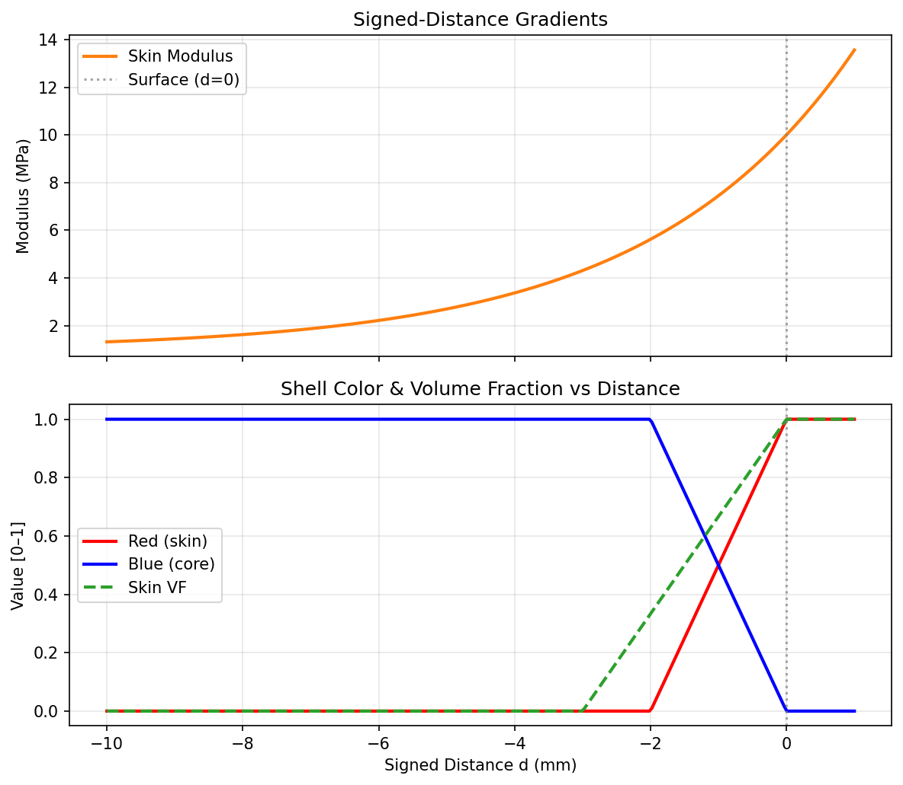
Render (modulus — clipped)
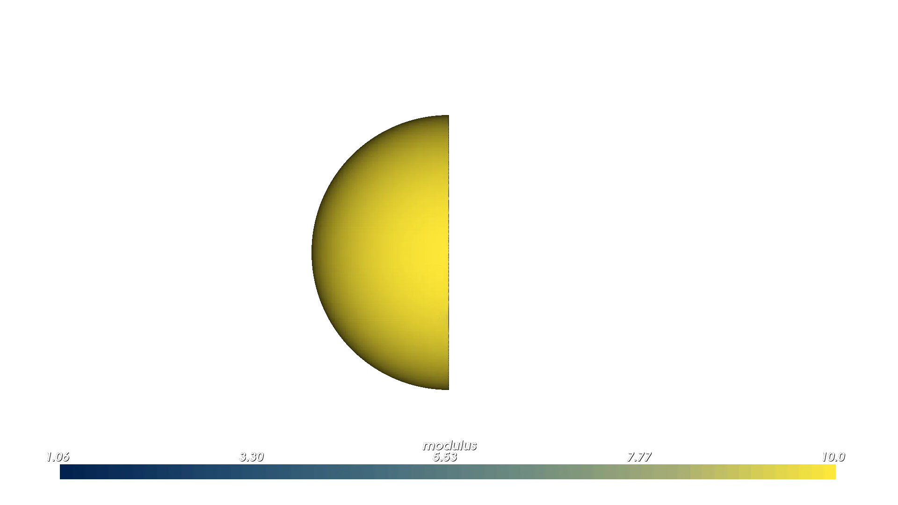
Render (color — clipped)
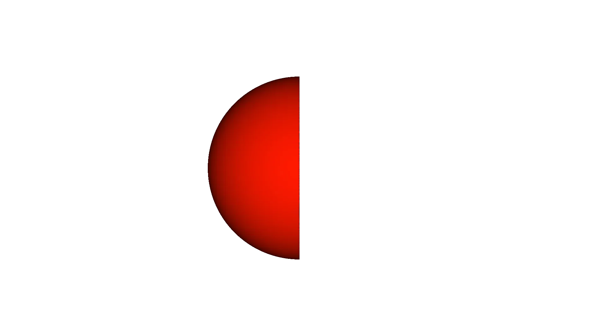
Render (volume fractions — clipped)
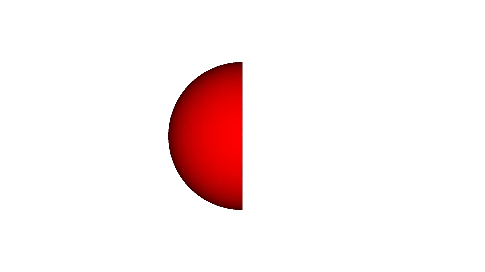
Lesson 6: Cylindrical Coordinate Gradients#
Cylindrical coordinates are natural for objects with rotational symmetry about the Z axis. The key variables are:
rho— radial distance from the Z axisphic— azimuthal angle (radians, -pi to +pi)z— height (same as Cartesian z)
This example applies gradients to a cylinder:
Radial modulus: stiffness increases linearly from center (
rho=0) to edge (rho=R)Angular color: a color sweep around the circumference using
phicRadial volume fractions: two-material blend from core to edge
Note: The modulus and volume fraction renders below show a clipped cross-section to reveal the internal radial gradient.
import os
import pyvcad as pv
import pyvcad_rendering as viz
cyl_radius = 15.0
cyl_height = 30.0
materials = pv.default_materials
# Radial modulus
mod_min, mod_max = 1.0, 10.0
radial_expr = f'{mod_min} + ({mod_max} - {mod_min}) * (rho / {cyl_radius})'
# Angular color sweep
r_expr = f'clamp((phic + 3.14159) / (2 * 3.14159), 0, 1)'
g_expr = f'clamp(1.0 - (phic + 3.14159) / (2 * 3.14159), 0, 1)'
# Volume fractions: radial blend
vf_edge = f'clamp(rho / {cyl_radius}, 0, 1)'
vf_core = f'1.0 - clamp(rho / {cyl_radius}, 0, 1)'
cylinder = pv.Cylinder(pv.Vec3(0, 0, 0), cyl_radius, cyl_height)
cylinder.set_attribute(pv.DefaultAttributes.MODULUS,
pv.FloatAttribute(radial_expr))
cylinder.set_attribute(pv.DefaultAttributes.COLOR_RGBA,
pv.Vec4Attribute(r_expr, g_expr, '0.3', '1.0'))
cylinder.set_attribute(pv.DefaultAttributes.VOLUME_FRACTIONS,
pv.VolumeFractionsAttribute([
(vf_edge, materials.id("red")),
(vf_core, materials.id("blue"))
]))
root = cylinder
viz.Render(root, materials)
Plot
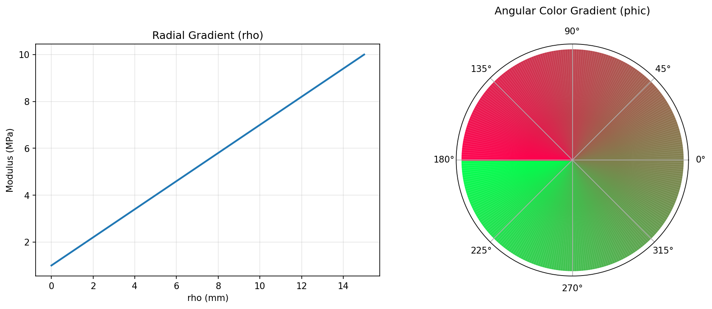
Render (modulus — clipped)
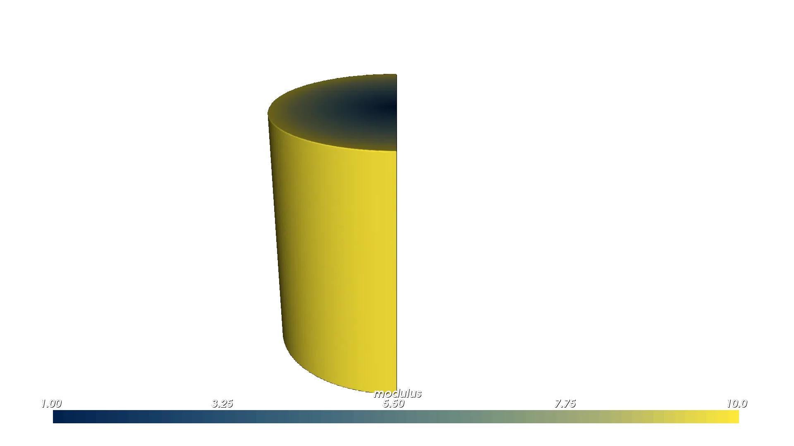
Render (color — angular)
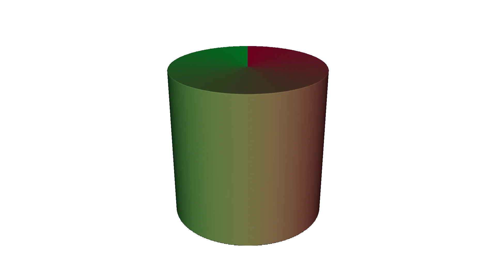
Render (volume fractions — clipped)
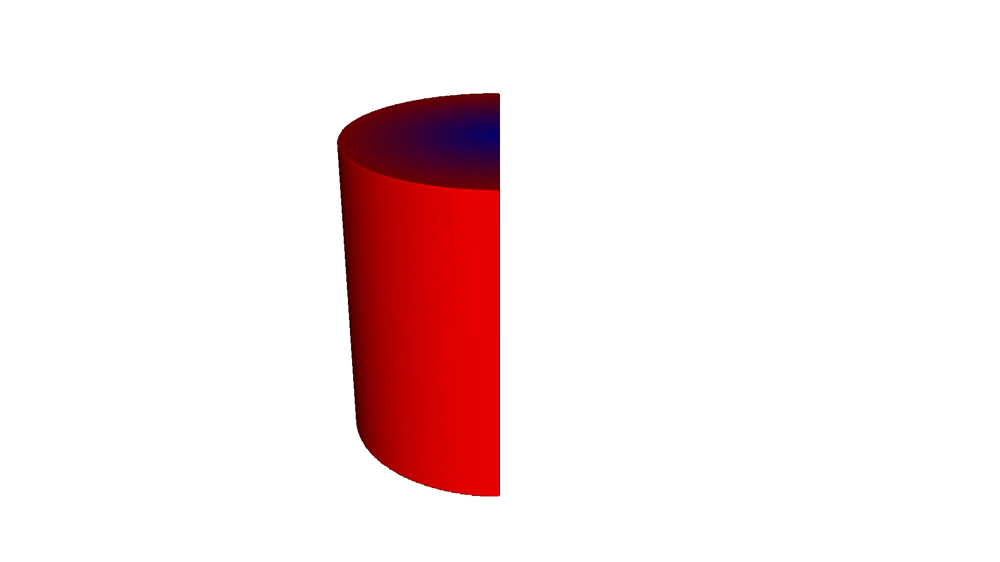
Lesson 7: Spherical Coordinate Gradients#
Spherical coordinates are ideal for objects with radial symmetry from a central point. The key variables are:
r— radial distance from the origintheta— azimuthal angle in the XY plane (radians, -pi to +pi)phis— polar angle from the +Z axis (radians, 0 to pi)
This example applies gradients to a sphere:
Radial modulus: stiffness increases from center (
r=0) to surface (r=R)Polar color: color varies from the north pole (
phis=0) to the south pole (phis=pi)Radial volume fractions: two-material blend from center to surface
Note: The modulus and volume fraction renders below show a clipped cross-section to reveal the internal radial gradient.
import os
import pyvcad as pv
import pyvcad_rendering as viz
sph_radius = 15.0
materials = pv.default_materials
# Radial modulus
mod_min, mod_max = 1.0, 10.0
radial_expr = f'{mod_min} + ({mod_max} - {mod_min}) * (r / {sph_radius})'
# Polar angle color: north=blue, south=red
r_expr = f'clamp(phis / 3.14159, 0, 1)'
b_expr = f'clamp(1.0 - phis / 3.14159, 0, 1)'
# Volume fractions: center vs surface
vf_outer = f'clamp(r / {sph_radius}, 0, 1)'
vf_inner = f'1.0 - clamp(r / {sph_radius}, 0, 1)'
sphere = pv.Sphere(pv.Vec3(0, 0, 0), sph_radius)
sphere.set_attribute(pv.DefaultAttributes.MODULUS,
pv.FloatAttribute(radial_expr))
sphere.set_attribute(pv.DefaultAttributes.COLOR_RGBA,
pv.Vec4Attribute(r_expr, '0.2', b_expr, '1.0'))
sphere.set_attribute(pv.DefaultAttributes.VOLUME_FRACTIONS,
pv.VolumeFractionsAttribute([
(vf_outer, materials.id("red")),
(vf_inner, materials.id("blue"))
]))
root = sphere
viz.Render(root, materials)
Plot
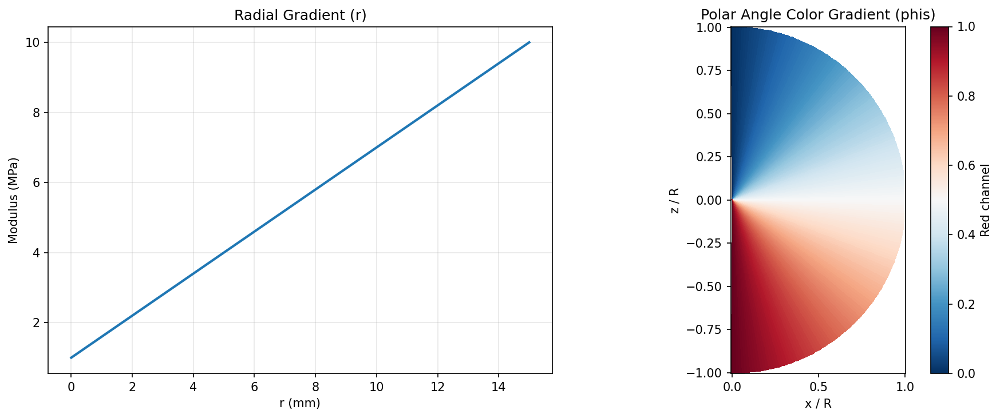
Render (modulus — clipped)
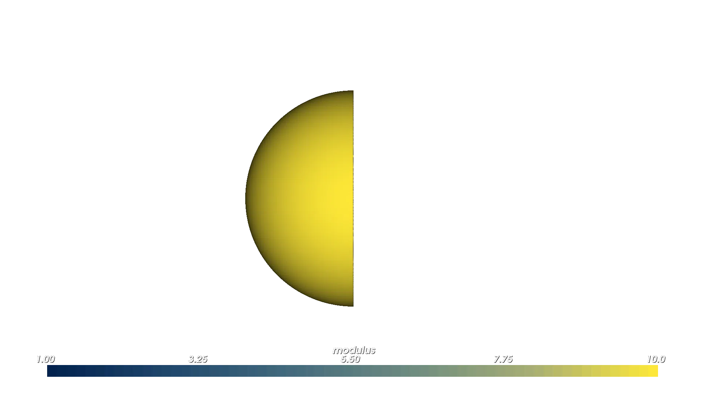
Render (color — polar)
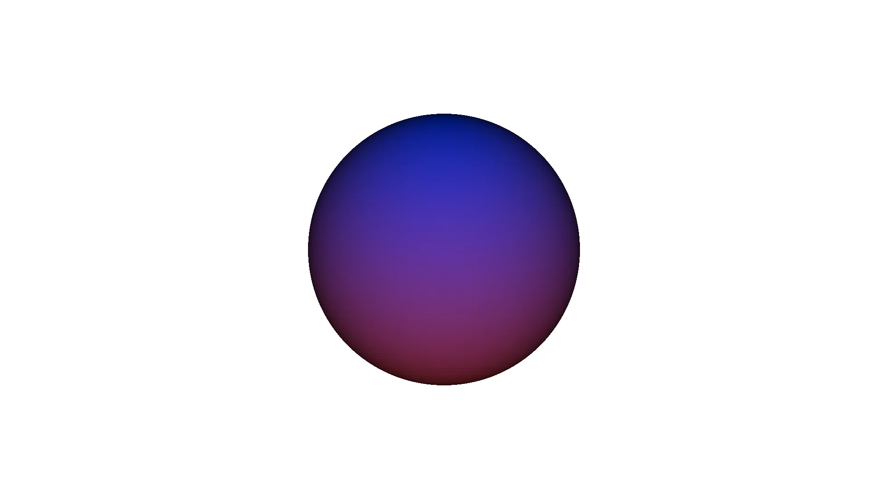
Render (volume fractions — clipped)
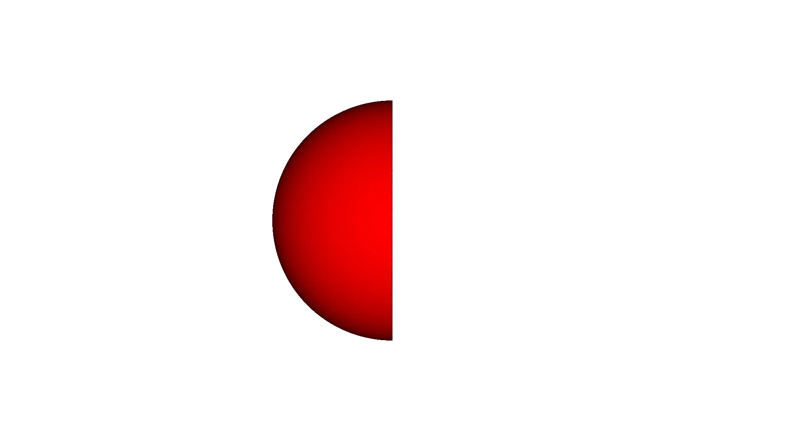
Summary: Gradient Toolbox#
Gradient Type |
Expression Pattern |
Best For |
|---|---|---|
Linear |
|
Uniform property ramps |
Power Law |
|
Tunable non-uniform ramps |
Sigmoid |
|
Smooth step transitions |
Gaussian |
|
Localized peaks |
Exponential |
|
Decay / attenuation |
Sinusoidal |
|
Periodic layers / bands |
Multi-axis |
|
2D patterns, diagonal sweeps |
Signed distance |
|
Surface-following skins |
Cylindrical |
|
Radial and angular patterns |
Spherical |
|
Radial and polar patterns |
For the complete list of available operators, functions, and coordinate variables, see Math expressions in OpenVCAD.